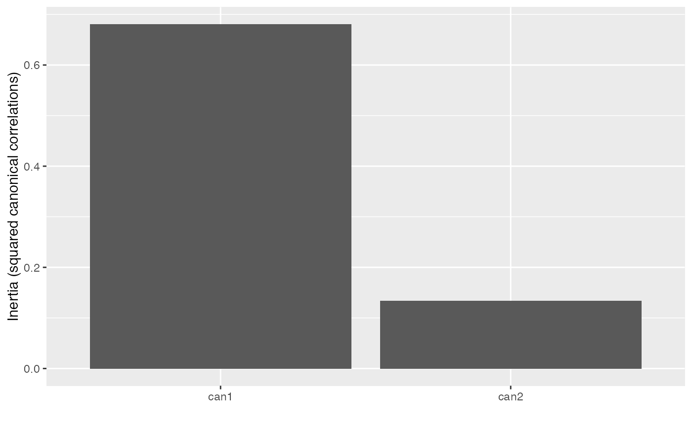
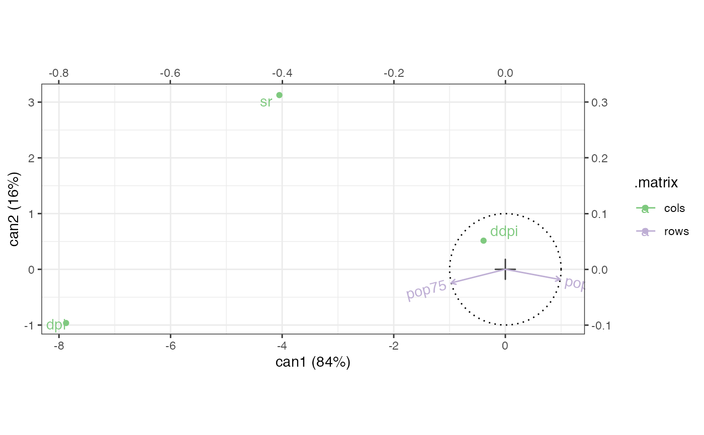
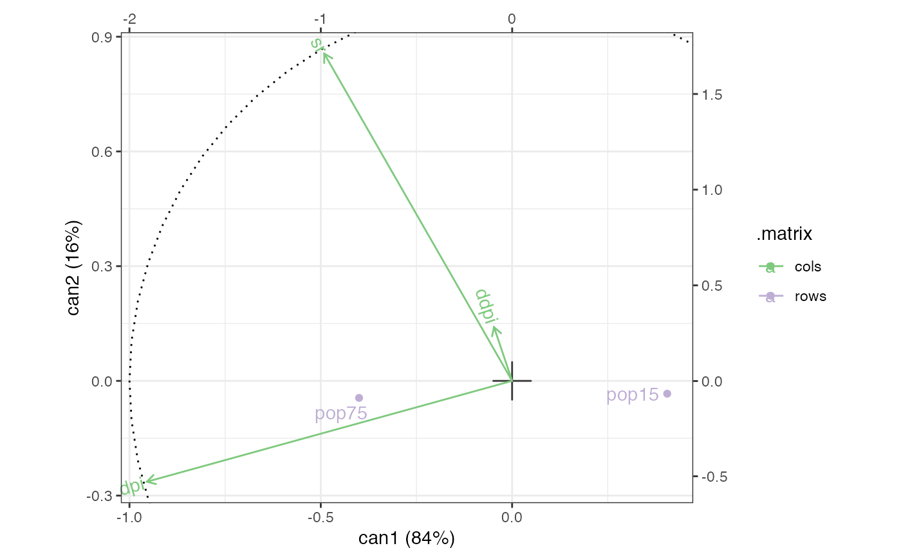
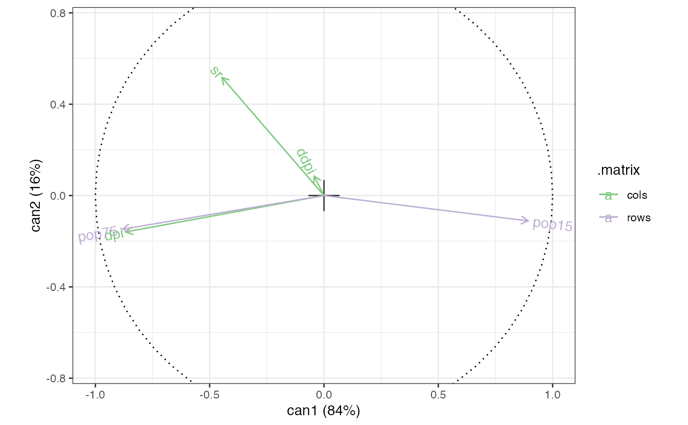

methods-candisc.RdThese methods extract data from, and attribute new data to, objects of class 'candisc' and 'cancor' from the candisc package.
# S3 method for cancor as_tbl_ord(x) # S3 method for cancor recover_rows(x) # S3 method for cancor recover_cols(x) # S3 method for cancor recover_inertia(x) # S3 method for cancor recover_coord(x) # S3 method for cancor recover_conference(x) # S3 method for cancor augmentation_rows(x) # S3 method for cancor augmentation_cols(x) # S3 method for cancor augmentation_coord(x) # S3 method for cancor supplementation_rows(x) # S3 method for cancor supplementation_cols(x)
| x | An ordination object. |
|---|
#> [1] "data.frame"#> sr pop15 pop75 dpi ddpi #> Australia 11.43 29.35 2.87 2329.68 2.87 #> Austria 12.07 23.32 4.41 1507.99 3.93 #> Belgium 13.17 23.80 4.43 2108.47 3.82 #> Bolivia 5.75 41.89 1.67 189.13 0.22 #> Brazil 12.88 42.19 0.83 728.47 4.56 #> Canada 8.79 31.72 2.85 2982.88 2.43# canonical correlation analysis of age distributions and financial factors savings_cancor <- candisc::cancor( LifeCycleSavings[, c("pop15", "pop75")], LifeCycleSavings[, c("sr", "dpi", "ddpi")] ) # wrap as a 'tbl_ord' object (savings_cancor <- as_tbl_ord(savings_cancor))#> # A tbl_ord of class 'cancor': (52 x 2) x (53 x 2)' #> # 2 coordinates: can1 and can2 #> # #> # Rows (standard): [ 52 x 2 | 0 ] #> can1 can2 | #> | #> 1 0.983 -0.184 | #> 2 -0.970 -0.244 | #> 3 -0.563 0.404 | #> 4 -1.47 -0.873 | #> 5 -1.45 -1.03 | #> #> # #> # Columns (standard): [ 53 x 2 | 0 ] #> can1 can2 | #> | #> 1 -0.491 0.856 | #> 2 -0.955 -0.264 | #> 3 -0.0473 0.141 | #> 4 -1.20 -0.162 | #> 5 -0.514 0.333 | #>#> # A tibble: 1 × 7 #> rank n.row n.col inertia prop.var.1 prop.var.2 class #> <int> <int> <int> <dbl> <dbl> <dbl> <chr> #> 1 2 52 53 0.814 0.836 0.164 cancor#> can1 can2 #> pop15 0.9829821 -0.1837015 #> pop75 -0.9697929 -0.2439299#> can1 can2 #> sr -0.4910379 0.8557760 #> dpi -0.9545172 -0.2637266 #> ddpi -0.0473377 0.1407737#> can1 can2 #> pop15 0.9829821 -0.1837015 #> pop75 -0.9697929 -0.2439299 #> Australia -0.5625360 0.4039025 #> Austria -1.4715254 -0.8733232 #> Belgium -1.4477236 -1.0314729 #> Bolivia 0.6458541 -0.5890527#> can1 can2 #> sr -0.4910379 0.8557760 #> dpi -0.9545172 -0.2637266 #> ddpi -0.0473377 0.1407737 #> Australia -1.1975826 -0.1623640 #> Austria -0.5144855 0.3326099 #> Belgium -1.1260475 0.2801166# augment canonical weights with row names and centers (savings_cancor <- augment_ord(savings_cancor))#> # A tbl_ord of class 'cancor': (52 x 2) x (53 x 2)' #> # 2 coordinates: can1 and can2 #> # #> # Rows (standard): [ 52 x 2 | 2 ] #> can1 can2 | .name .supplement #> | <chr> <lgl> #> 1 0.983 -0.184 | 1 pop15 FALSE #> 2 -0.970 -0.244 | 2 pop75 FALSE #> 3 -0.563 0.404 | 3 Australia TRUE #> 4 -1.47 -0.873 | 4 Austria TRUE #> 5 -1.45 -1.03 | 5 Belgium TRUE #> # … with 47 more rows #> # #> # Columns (standard): [ 53 x 2 | 2 ] #> can1 can2 | .name .supplement #> | <chr> <lgl> #> 1 -0.491 0.856 | 1 sr FALSE #> 2 -0.955 -0.264 | 2 dpi FALSE #> 3 -0.0473 0.141 | 3 ddpi FALSE #> 4 -1.20 -0.162 | 4 Australia TRUE #> 5 -0.514 0.333 | 5 Austria TRUE #> # … with 48 more rows#> # A tibble: 2 × 4 #> .name .cancor .inertia .prop_var #> <fct> <dbl> <dbl> <dbl> #> 1 can1 0.825 0.680 0.836 #> 2 can2 0.365 0.133 0.164# scree plot of canonical correlations tidy(savings_cancor) %>% ggplot(aes(x = .name, y = .inertia)) + geom_col() + labs(x = "", y = "Inertia (squared canonical correlations)")# fortification binds tibbles of canonical weights fortify(savings_cancor)#> # A tibble: 105 × 5 #> can1 can2 .name .supplement .matrix #> <dbl> <dbl> <chr> <lgl> <chr> #> 1 0.983 -0.184 pop15 FALSE rows #> 2 -0.970 -0.244 pop75 FALSE rows #> 3 -0.563 0.404 Australia TRUE rows #> 4 -1.47 -0.873 Austria TRUE rows #> 5 -1.45 -1.03 Belgium TRUE rows #> 6 0.646 -0.589 Bolivia TRUE rows #> 7 0.951 0.866 Brazil TRUE rows #> 8 -0.405 -0.161 Canada TRUE rows #> 9 0.621 0.557 Chile TRUE rows #> 10 1.17 0.508 China TRUE rows #> # … with 95 more rows# row-standard biplot of structure correlations savings_cancor %>% confer_inertia("cols") %>% ggbiplot(aes(label = .name, color = .matrix), sec.axes = "cols", scale.factor = 10, .supplement = FALSE) + theme_bw() + geom_origin() + geom_unit_circle(linetype = "dotted") + geom_rows_vector() + geom_rows_text_radiate() + geom_cols_point() + geom_cols_text_repel() + scale_color_brewer(type = "qual") + expand_limits(x = c(-.1, .1))# column-standard biplot of structure correlations savings_cancor %>% confer_inertia("rows") %>% ggbiplot(aes(label = .name, color = .matrix), sec.axes = "rows", scale.factor = 1/2, .supplement = FALSE) + theme_bw() + geom_origin() + geom_unit_circle(linetype = "dotted") + geom_cols_vector() + geom_cols_text_radiate() + geom_rows_point() + geom_rows_text_repel() + scale_color_brewer(type = "qual") + expand_limits(x = c(-.05, .05))# symmetric biplot of structure correlations savings_cancor %>% confer_inertia("symmetric") %>% ggbiplot(aes(label = .name, color = .matrix), .supplement = FALSE) + theme_bw() + geom_origin() + geom_unit_circle(linetype = "dotted") + geom_cols_vector() + geom_cols_text_radiate() + geom_rows_vector() + geom_rows_text_radiate() + scale_color_brewer(type = "qual") + expand_limits(x = c(-1, 1), y = c(-.75, .75))